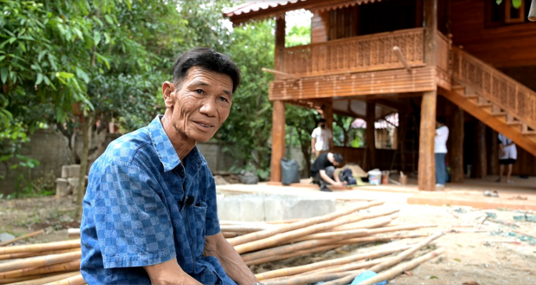

สล่าพักเป็นคนอำเภอเด่นชัย
ได้มีโอกาสมาทำงานกับลุงที่เป็นสล่าตั้งแต่อายุ ๑๒ ปี
เก็บเกี่ยวประสบการณ์ทั้งกับลุงและงานจากที่อื่นมาเรื่อยโดยเฉพาะงานไม้
จนเป็นสล่าเต็มตัวเมื่ออายุ ๓๐ ตั้งหลักที่อำเภอลอง จังหวัดแพร่
โดยส่วนใหญ่จะเป็นงานเรือน ที่มีทั้งวัสดุไม้และปูน
ซึ่งโดยส่วนตัวจะชื่นชอบงานที่เป็นวัสดุไม้
เนื่องจากงานไม้เป็นงานที่มีความละเอียดอ่อน ต้องใช้ความคิด
การวางแผนที่เยอะ มีแบบในหัว และคิดออกมาเป็นจำนวน ความหนา
ความยาวของไม้